2024 Advanced Higher Biology - Paper 2 questions
Source: Scottish Qualifications Authority (SQA) / Qualifications Scotland. This is a StemInteract HTML companion, not an official HTML edition. Selectable text is supplied alongside original page images. Use the images or original PDF for equations, powers, fractions, vector notation, tables and diagrams; text extraction cannot fully preserve mathematical layout.
Jump to a question
PDF page 1
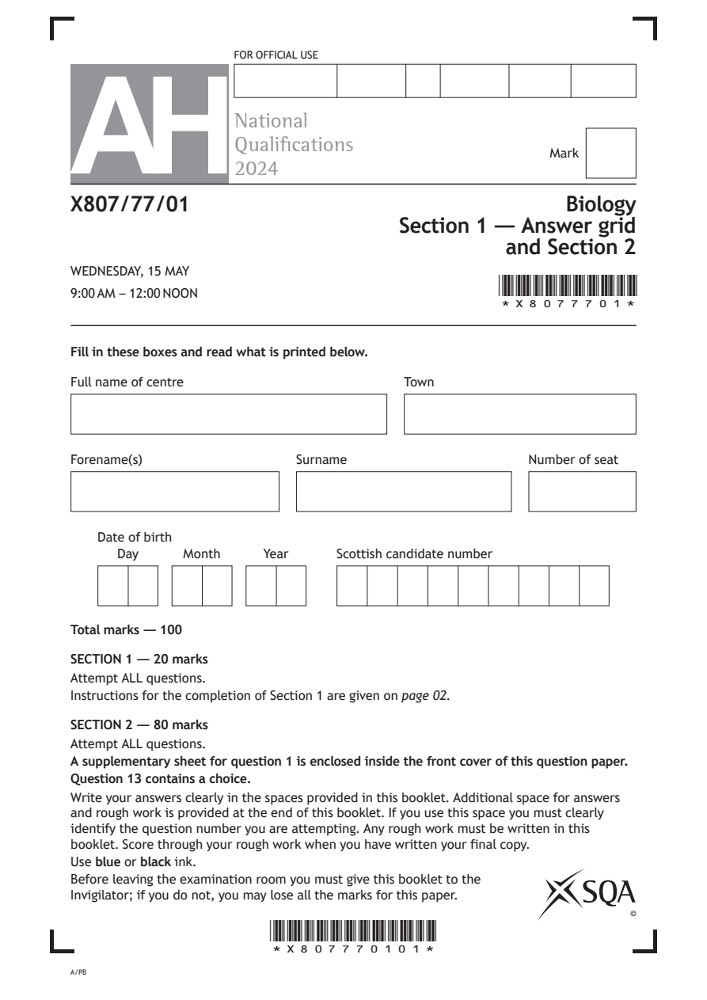
Selectable page text
FOR OFFICIAL USE
AH
National
Qualications
Mark
2024
X807/77/01 Biology
Section 1 — Answer grid
and Section 2
WEDNESDAY, 15 MAY
9:00 AM – 12:00 NOON
*X8077701*
Fill in these boxes and read what is printed below.
Full name of centre Town
Forename(s) Surname Number of seat
Date of birth
Day Month Year Scottish candidate number
Total marks — 100
SECTION 1 — 20 marks
Attempt ALL questions.
Instructions for the completion of Section 1 are given on page 02.
SECTION 2 — 80 marks
Attempt ALL questions.
A supplementary sheet for question 1 is enclosed inside the front cover of this question paper.
Question 13 contains a choice.
Write your answers clearly in the spaces provided in this booklet. Additional space for answers
and rough work is provided at the end of this booklet. If you use this space you must clearly
identify the question number you are attempting. Any rough work must be written in this
booklet. Score through your rough work when you have written your final copy.
Use blue or black ink.
Before leaving the examination room you must give this booklet to the
Invigilator; if you do not, you may lose all the marks for this paper.
©
*X807770101*
A/PBPDF page 2
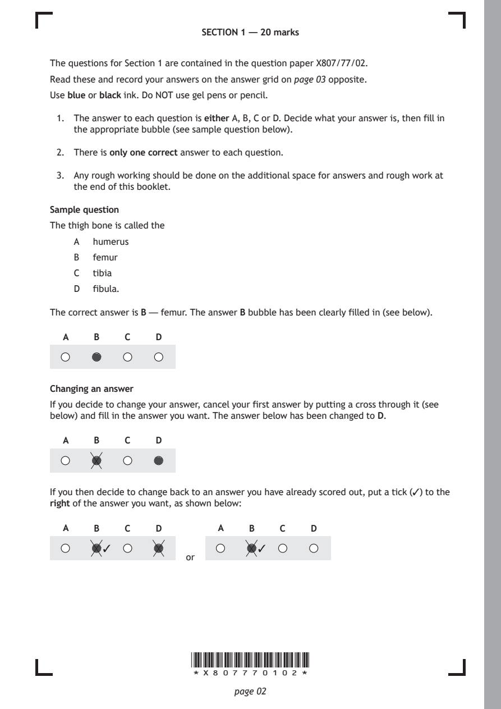
Selectable page text
SECTION 1 — 20 marks
The questions for Section 1 are contained in the question paper X807/77/02.
Read these and record your answers on the answer grid on page 03 opposite.
Use blue or black ink. Do NOT use gel pens or pencil.
1. The answer to each question is either A, B, C or D. Decide what your answer is, then fill in
the appropriate bubble (see sample question below).
2. There is only one correct answer to each question.
3. Any rough working should be done on the additional space for answers and rough work at
the end of this booklet.
Sample question
The thigh bone is called the
A humerus
B femur
C tibia
D fibula.
The correct answer is B — femur. The answer B bubble has been clearly filled in (see below).
A B C D
Changing an answer
If you decide to change your answer, cancel your first answer by putting a cross through it (see
below) and fill in the answer you want. The answer below has been changed to D.
A B C D
If you then decide to change back to an answer you have already scored out, put a tick (✓) to the
right of the answer you want, as shown below:
A B C D A B C D
or
*X807770102*
page 02PDF page 3
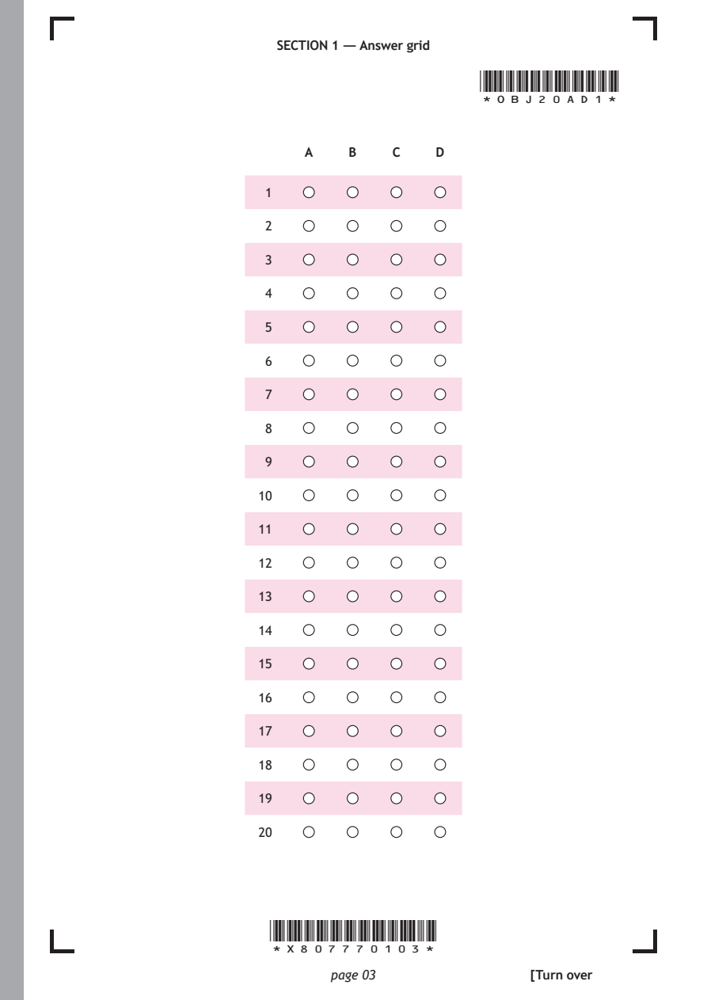
Selectable page text
SECTION 1 — Answer grid
*OBJ20AD1*
A B C D
1
2
3
4
5
6
7
8
9
10
11
12
13
14
15
16
17
18
19
20
*X807770103*
page 03 [Turn overPDF page 4

Selectable page text
[BLANK PAGE]
DO NOT WRITE ON THIS PAGE
*X807770104*
page 04PDF page 5

Selectable page text
[Turn over for next question
DO NOT WRITE ON THIS PAGE
*X807770105*
page 05PDF page 6
Paper 2, Question 1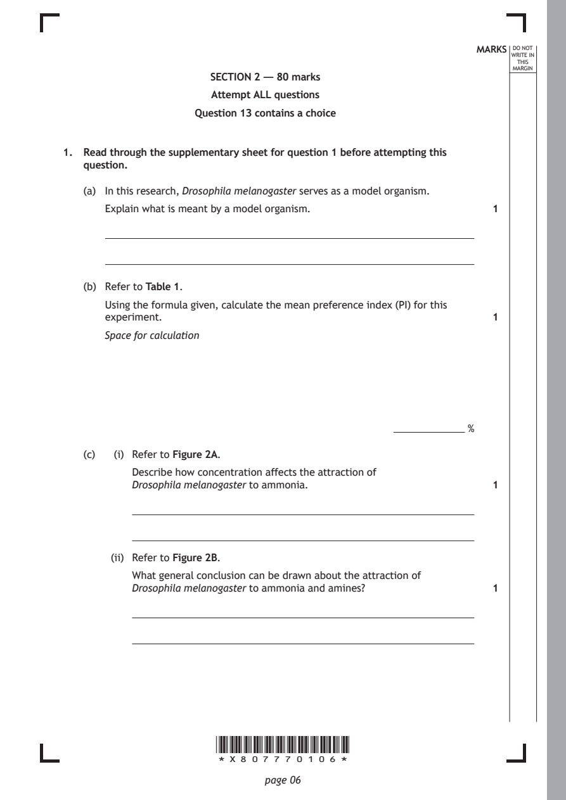
Selectable page text
MARKS _{W}^{D}_{R}^{O}_{I} _{T}^{N}OT
E IN
THIS
MARGIN
SECTION 2 — 80 marks
Attempt ALL questions
Question 13 contains a choice
1. Read through the supplementary sheet for question 1 before attempting this
question.
(a) In this research, Drosophila melanogaster serves as a model organism.
Explain what is meant by a model organism. 1
(b) Refer to Table 1.
Using the formula given, calculate the mean preference index (PI) for this
experiment. 1
Space for calculation
%
(c) (i) Refer to Figure 2A.
Describe how concentration affects the attraction of
Drosophila melanogaster to ammonia. 1
(ii) Refer to Figure 2B.
What general conclusion can be drawn about the attraction of
Drosophila melanogaster to ammonia and amines? 1
*X807770106*
page 06PDF page 7
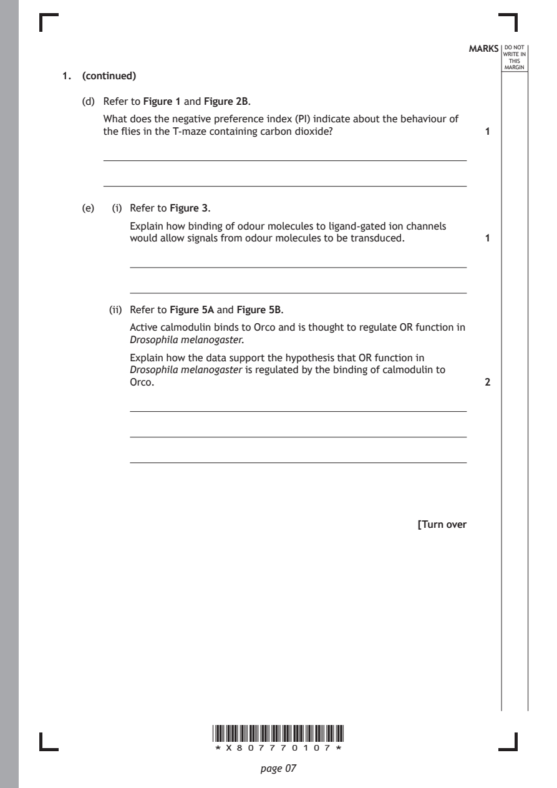
Selectable page text
MARKS _{W}^{D}_{R}^{O}_{I} _{T}^{N}OT
E IN
THIS
MARGIN
1. (continued)
(d) Refer to Figure 1 and Figure 2B.
What does the negative preference index (PI) indicate about the behaviour of
the flies in the T‑maze containing carbon dioxide? 1
(e) (i) Refer to Figure 3.
Explain how binding of odour molecules to ligand‑gated ion channels
would allow signals from odour molecules to be transduced. 1
(ii) Refer to Figure 5A and Figure 5B.
Active calmodulin binds to Orco and is thought to regulate OR function in
Drosophila melanogaster.
Explain how the data support the hypothesis that OR function in
Drosophila melanogaster is regulated by the binding of calmodulin to
Orco. 2
[Turn over
*X807770107*
page 07PDF page 8
Paper 2, Question 2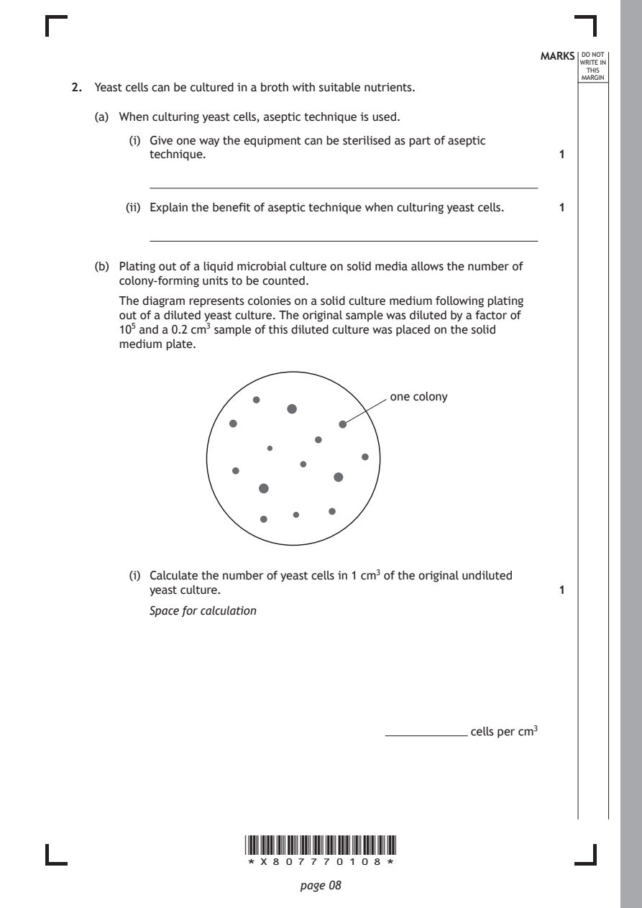
Selectable page text
MARKS _{W}^{D}_{R}^{O}_{I} _{T}^{N}OT
E IN
THIS
MARGIN
2. Yeast cells can be cultured in a broth with suitable nutrients.
(a) When culturing yeast cells, aseptic technique is used.
(i) Give one way the equipment can be sterilised as part of aseptic
technique. 1
(ii) Explain the benefit of aseptic technique when culturing yeast cells. 1
(b) Plating out of a liquid microbial culture on solid media allows the number of
colony‑forming units to be counted.
The diagram represents colonies on a solid culture medium following plating
out of a diluted yeast culture. The original sample was diluted by a factor of
10⁵ and a 0.2 cm³ sample of this diluted culture was placed on the solid
medium plate.
one colony
(i) Calculate the number of yeast cells in 1 cm³ of the original undiluted
yeast culture. 1
Space for calculation
cells per cm³
*X807770108*
page 08PDF page 9
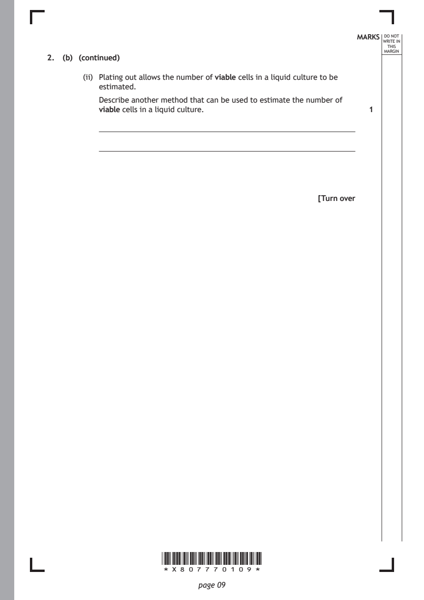
Selectable page text
MARKS _{W}^{D}_{R}^{O}_{I} _{T}^{N}OT
E IN
THIS
MARGIN
2. (b) (continued)
(ii) Plating out allows the number of viable cells in a liquid culture to be
estimated.
Describe another method that can be used to estimate the number of
viable cells in a liquid culture. 1
[Turn over
*X807770109*
page 09PDF page 10
Paper 2, Question 3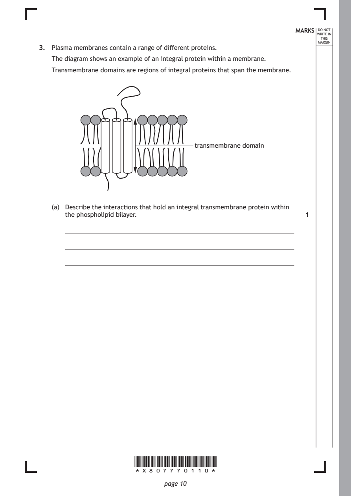
Selectable page text
MARKS _{W}^{D}_{R}^{O}_{I} _{T}^{N}OT
E IN
THIS
MARGIN
3. Plasma membranes contain a range of different proteins.
The diagram shows an example of an integral protein within a membrane.
Transmembrane domains are regions of integral proteins that span the membrane.
transmembrane domain
(a) Describe the interactions that hold an integral transmembrane protein within
the phospholipid bilayer. 1
*X807770110*
page 10PDF page 11
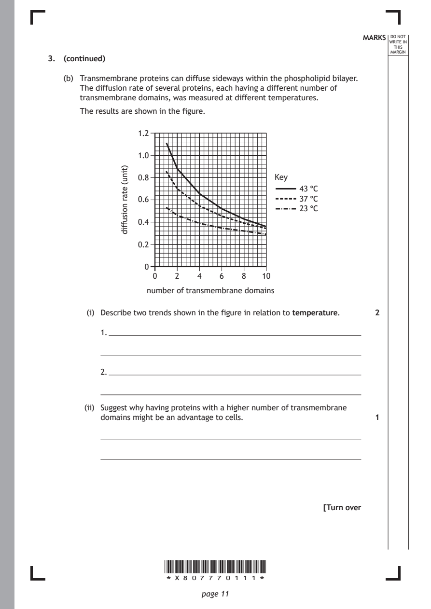
Selectable page text
MARKS _{W}^{D}_{R}^{O}_{I} _{T}^{N}OT
E IN
THIS
MARGIN
3. (continued)
(b) Transmembrane proteins can diffuse sideways within the phospholipid bilayer.
The diffusion rate of several proteins, each having a different number of
transmembrane domains, was measured at different temperatures.
The results are shown in the figure.
*X807770111*
page 11
)tinu(
etar
noisuffid
1.2
1.0
0.8 Key
43 °C
0.6 37 °C
23 °C
0.4
0.2
0
0 2 4 6 8 10
number of transmembrane domains
(i) Describe two trends shown in the figure in relation to temperature. 2
1.
2.
(ii) Suggest why having proteins with a higher number of transmembrane
domains might be an advantage to cells. 1
[Turn overPDF page 12
Paper 2, Question 4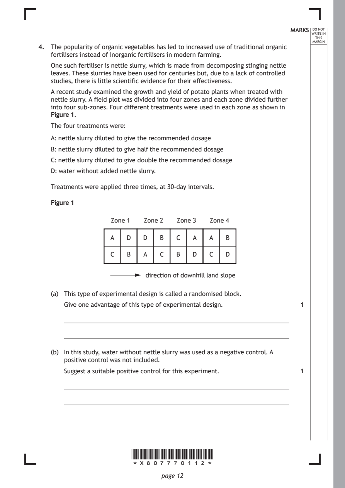
Selectable page text
MARKS _{W}^{D}_{R}^{O}_{I} _{T}^{N}OT
E IN
THIS
MARGIN
4. The popularity of organic vegetables has led to increased use of traditional organic
fertilisers instead of inorganic fertilisers in modern farming.
One such fertiliser is nettle slurry, which is made from decomposing stinging nettle
leaves. These slurries have been used for centuries but, due to a lack of controlled
studies, there is little scientific evidence for their effectiveness.
A recent study examined the growth and yield of potato plants when treated with
nettle slurry. A field plot was divided into four zones and each zone divided further
into four sub‑zones. Four different treatments were used in each zone as shown in
Figure 1.
The four treatments were:
A: nettle slurry diluted to give the recommended dosage
B: nettle slurry diluted to give half the recommended dosage
C: nettle slurry diluted to give double the recommended dosage
D: water without added nettle slurry.
Treatments were applied three times, at 30‑day intervals.
Figure 1
Zone 1 Zone 2 Zone 3 Zone 4
A D D B C A A B
C B A C B D C D
direction of downhill land slope
(a) This type of experimental design is called a randomised block.
Give one advantage of this type of experimental design. 1
(b) In this study, water without nettle slurry was used as a negative control. A
positive control was not included.
Suggest a suitable positive control for this experiment. 1
*X807770112*
page 12PDF page 13
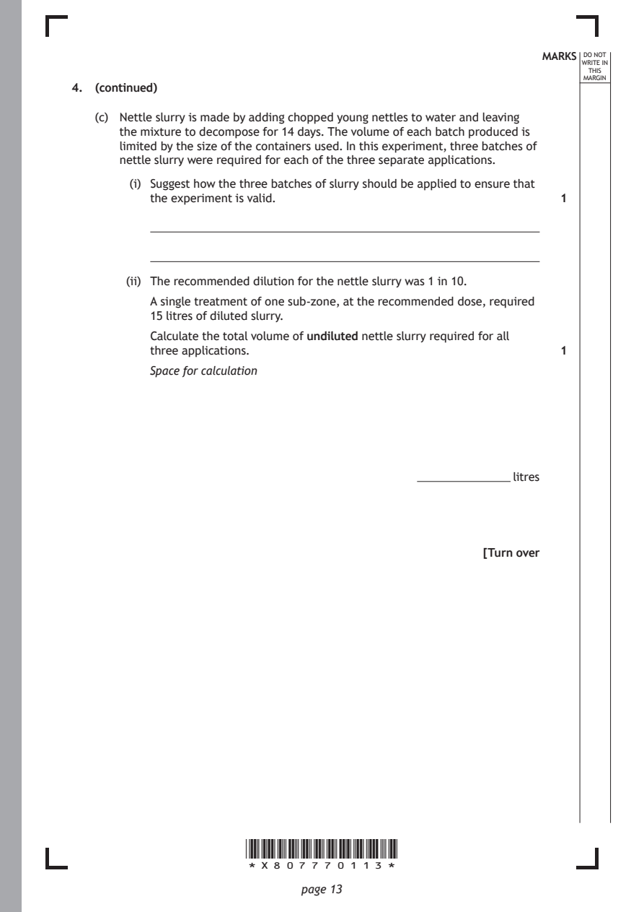
Selectable page text
MARKS _{W}^{D}_{R}^{O}_{I} _{T}^{N}OT
E IN
THIS
MARGIN
4. (continued)
(c) Nettle slurry is made by adding chopped young nettles to water and leaving
the mixture to decompose for 14 days. The volume of each batch produced is
limited by the size of the containers used. In this experiment, three batches of
nettle slurry were required for each of the three separate applications.
(i) Suggest how the three batches of slurry should be applied to ensure that
the experiment is valid. 1
(ii) The recommended dilution for the nettle slurry was 1 in 10.
A single treatment of one sub‑zone, at the recommended dose, required
15 litres of diluted slurry.
Calculate the total volume of undiluted nettle slurry required for all
three applications. 1
Space for calculation
litres
[Turn over
*X807770113*
page 13PDF page 14
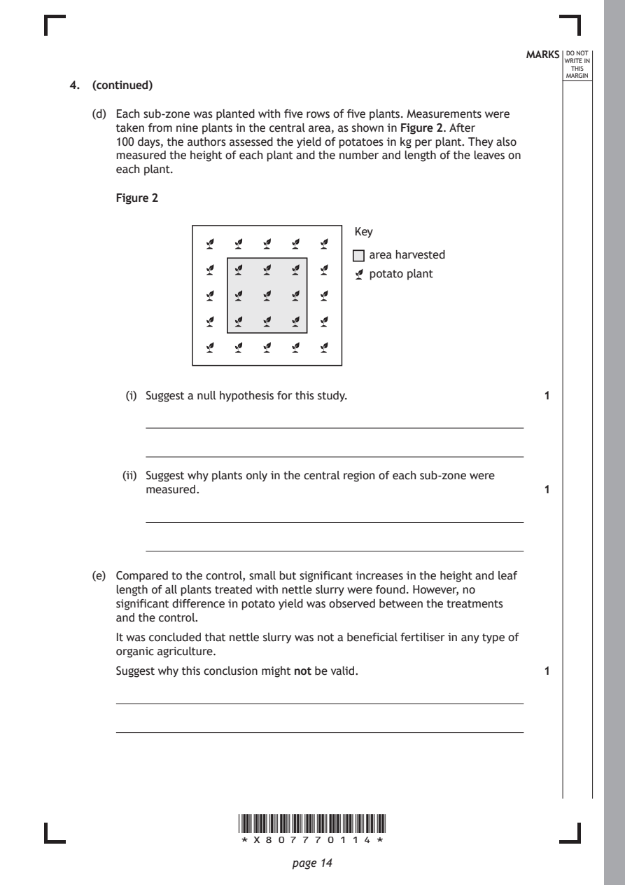
Selectable page text
MARKS _{W}^{D}_{R}^{O}_{I} _{T}^{N}OT
E IN
THIS
MARGIN
4. (continued)
(d) Each sub‑zone was planted with five rows of five plants. Measurements were
taken from nine plants in the central area, as shown in Figure 2. After
100 days, the authors assessed the yield of potatoes in kg per plant. They also
measured the height of each plant and the number and length of the leaves on
each plant.
Figure 2
Key
area harvested
potato plant
(i) Suggest a null hypothesis for this study. 1
(ii) Suggest why plants only in the central region of each sub‑zone were
measured. 1
(e) Compared to the control, small but significant increases in the height and leaf
length of all plants treated with nettle slurry were found. However, no
significant difference in potato yield was observed between the treatments
and the control.
It was concluded that nettle slurry was not a beneficial fertiliser in any type of
organic agriculture.
Suggest why this conclusion might not be valid. 1
*X807770114*
page 14PDF page 15
Paper 2, Question 5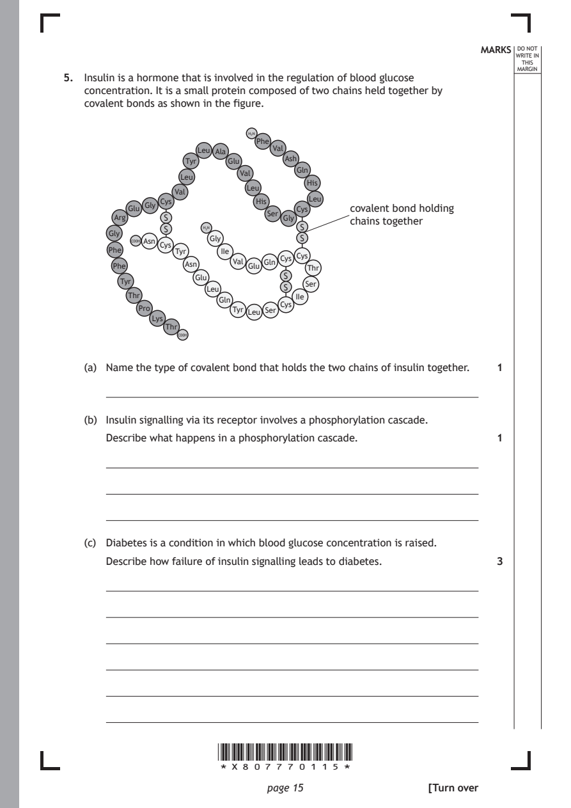
Selectable page text
MARKS _{W}^{D}_{R}^{O}_{I} _{T}^{N}OT
E IN
THIS
MARGIN
5. Insulin is a hormone that is involved in the regulation of blood glucose
concentration. It is a small protein composed of two chains held together by
covalent bonds as shown in the figure.
H₂N
Phe
Leu Ala Val
Tyr Glu Ash
Gln
Val
Leu
His
Leu
Val
Cys His Leu
Glu Gly Cys covalent bond holding
Ser
Arg S Gly chains together
S H₂N S
Gly
C00H Asn Cys Gly S
Phe Tyr IIe
Cys
Phe Asn Val Glu Gln Cys Thr
Glu S
Tyr
Leu S Ser
Thr IIe
Gln
Cys
Pro Tyr Leu Ser
Lys
Thr
C00H
(a) Name the type of covalent bond that holds the two chains of insulin together. 1
(b) Insulin signalling via its receptor involves a phosphorylation cascade.
Describe what happens in a phosphorylation cascade. 1
(c) Diabetes is a condition in which blood glucose concentration is raised.
Describe how failure of insulin signalling leads to diabetes. 3
*X807770115*
page 15 [Turn overPDF page 16
Paper 2, Question 6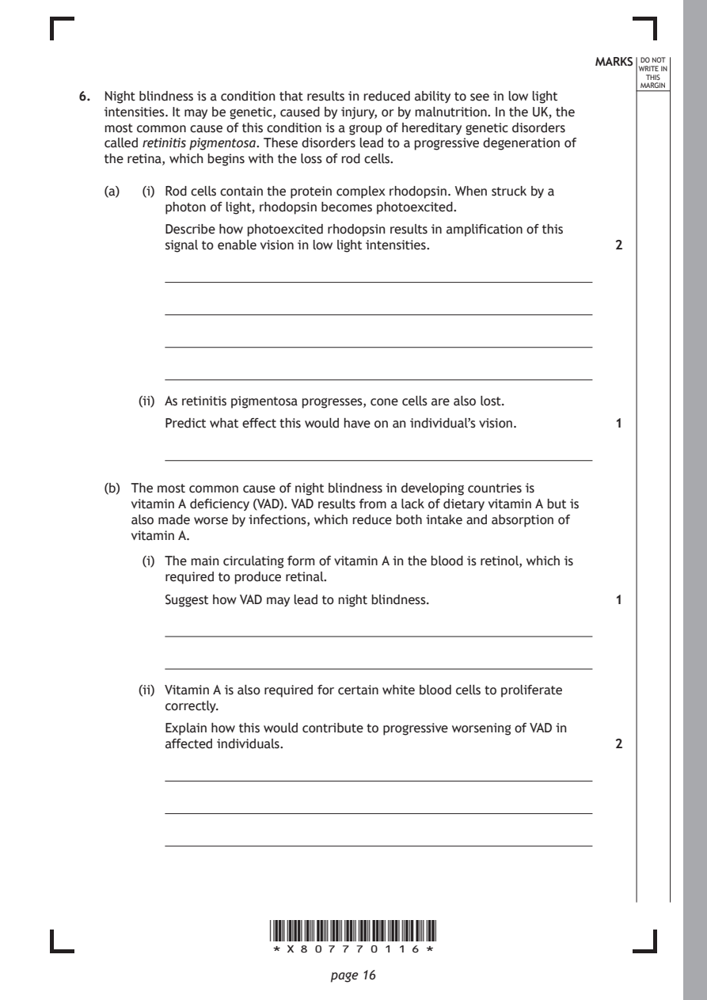
Selectable page text
MARKS _{W}^{D}_{R}^{O}_{I} _{T}^{N}OT
E IN
THIS
MARGIN
6. Night blindness is a condition that results in reduced ability to see in low light
intensities. It may be genetic, caused by injury, or by malnutrition. In the UK, the
most common cause of this condition is a group of hereditary genetic disorders
called retinitis pigmentosa. These disorders lead to a progressive degeneration of
the retina, which begins with the loss of rod cells.
(a) (i) Rod cells contain the protein complex rhodopsin. When struck by a
photon of light, rhodopsin becomes photoexcited.
Describe how photoexcited rhodopsin results in amplification of this
signal to enable vision in low light intensities. 2
(ii) As retinitis pigmentosa progresses, cone cells are also lost.
Predict what effect this would have on an individual’s vision. 1
(b) The most common cause of night blindness in developing countries is
vitamin A deficiency (VAD). VAD results from a lack of dietary vitamin A but is
also made worse by infections, which reduce both intake and absorption of
vitamin A.
(i) The main circulating form of vitamin A in the blood is retinol, which is
required to produce retinal.
Suggest how VAD may lead to night blindness. 1
(ii) Vitamin A is also required for certain white blood cells to proliferate
correctly.
Explain how this would contribute to progressive worsening of VAD in
affected individuals. 2
*X807770116*
page 16PDF page 17
Paper 2, Question 7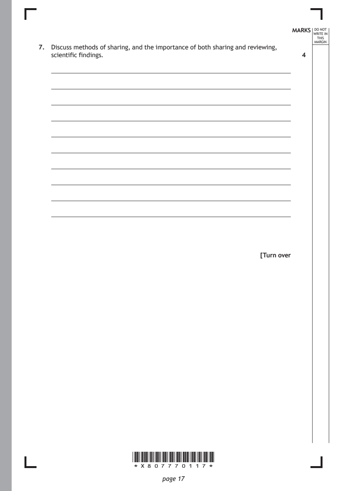
Selectable page text
MARKS _{W}^{D}_{R}^{O}_{I} _{T}^{N}OT
E IN
THIS
MARGIN
7. Discuss methods of sharing, and the importance of both sharing and reviewing,
scientific findings. 4
[Turn over
*X807770117*
page 17PDF page 18
Paper 2, Question 8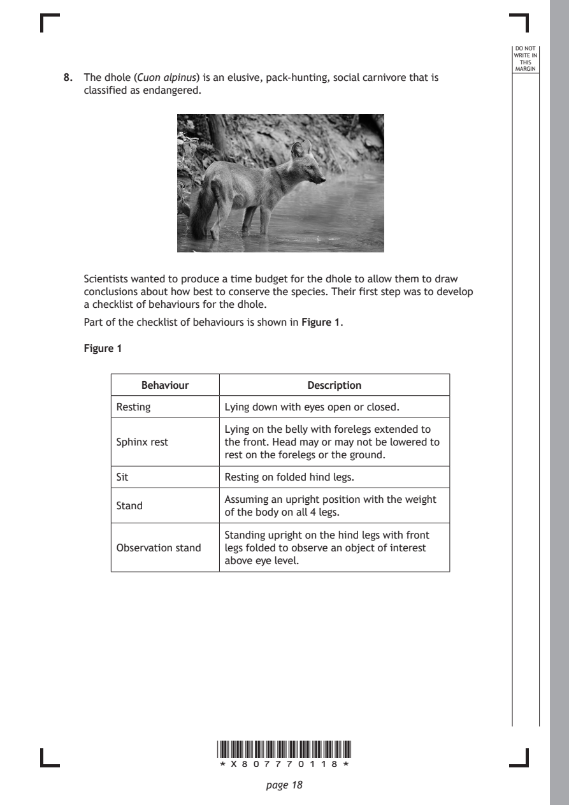
Selectable page text
DO NOT
WRITE IN
THIS
MARGIN
8. The dhole (Cuon alpinus) is an elusive, pack‑hunting, social carnivore that is
classified as endangered.
Scientists wanted to produce a time budget for the dhole to allow them to draw
conclusions about how best to conserve the species. Their first step was to develop
a checklist of behaviours for the dhole.
Part of the checklist of behaviours is shown in Figure 1.
Figure 1
Behaviour Description
Resting Lying down with eyes open or closed.
Lying on the belly with forelegs extended to
Sphinx rest the front. Head may or may not be lowered to
rest on the forelegs or the ground.
Sit Resting on folded hind legs.
Assuming an upright position with the weight
Stand
of the body on all 4 legs.
Standing upright on the hind legs with front
Observation stand legs folded to observe an object of interest
above eye level.
*X807770118*
page 18PDF page 19
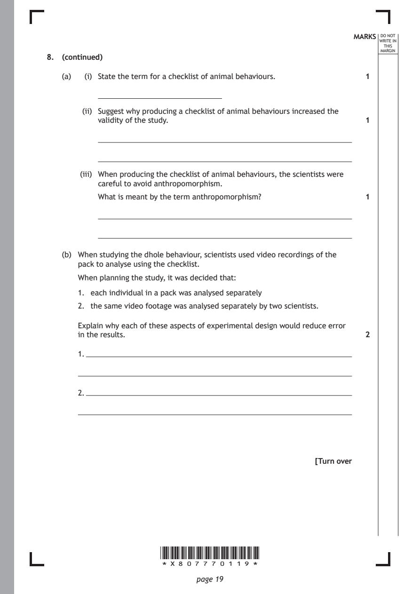
Selectable page text
MARKS _{W}^{D}_{R}^{O}_{I} _{T}^{N}OT
E IN
THIS
MARGIN
8. (continued)
(a) (i) State the term for a checklist of animal behaviours. 1
(ii) Suggest why producing a checklist of animal behaviours increased the
validity of the study. 1
(iii) When producing the checklist of animal behaviours, the scientists were
careful to avoid anthropomorphism.
What is meant by the term anthropomorphism? 1
(b) When studying the dhole behaviour, scientists used video recordings of the
pack to analyse using the checklist.
When planning the study, it was decided that:
1. each individual in a pack was analysed separately
2. the same video footage was analysed separately by two scientists.
Explain why each of these aspects of experimental design would reduce error
in the results. 2
1.
2.
[Turn over
*X807770119*
page 19PDF page 20
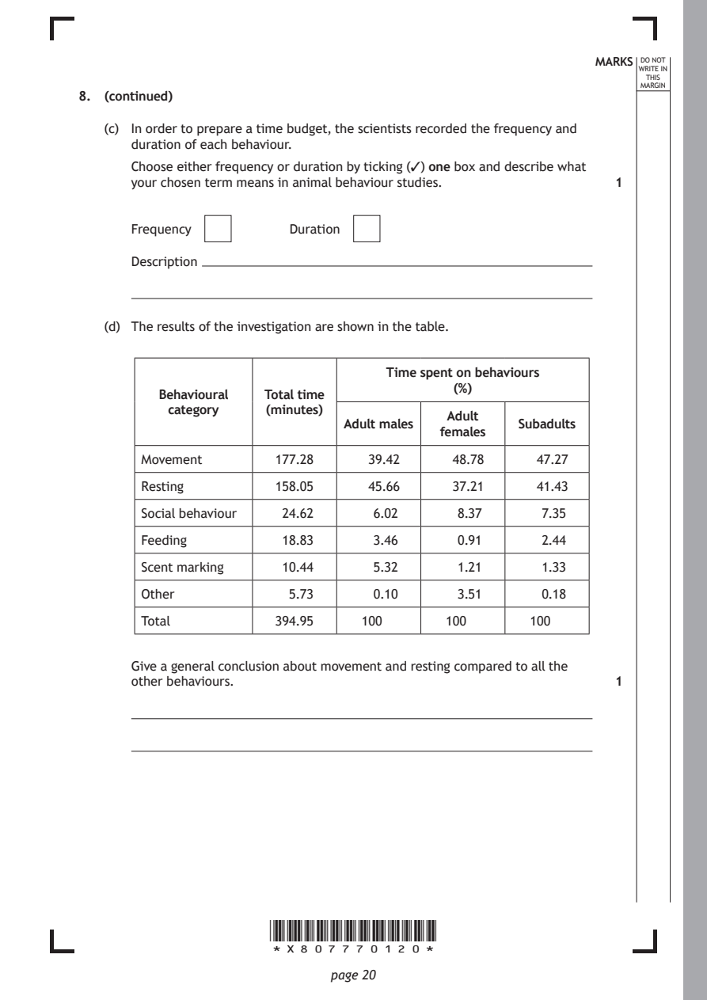
Selectable page text
MARKS _{W}^{D}_{R}^{O}_{I} _{T}^{N}OT
E IN
THIS
MARGIN
8. (continued)
(c) In order to prepare a time budget, the scientists recorded the frequency and
duration of each behaviour.
Choose either frequency or duration by ticking (✓) one box and describe what
your chosen term means in animal behaviour studies. 1
Frequency Duration
Description
(d) The results of the investigation are shown in the table.
Time spent on behaviours
(%)
Behavioural Total time
category (minutes)
Adult
Adult males Subadults
females
Movement 177.28 39.42 48.78 47.27
Resting 158.05 45.66 37.21 41.43
Social behaviour 24.62 6.02 8.37 7.35
Feeding 18.83 3.46 0.91 2.44
Scent marking 10.44 5.32 1.21 1.33
Other 5.73 0.10 3.51 0.18
Total 394.95 100 100 100
Give a general conclusion about movement and resting compared to all the
other behaviours. 1
*X807770120*
page 20PDF page 21
Paper 2, Question 9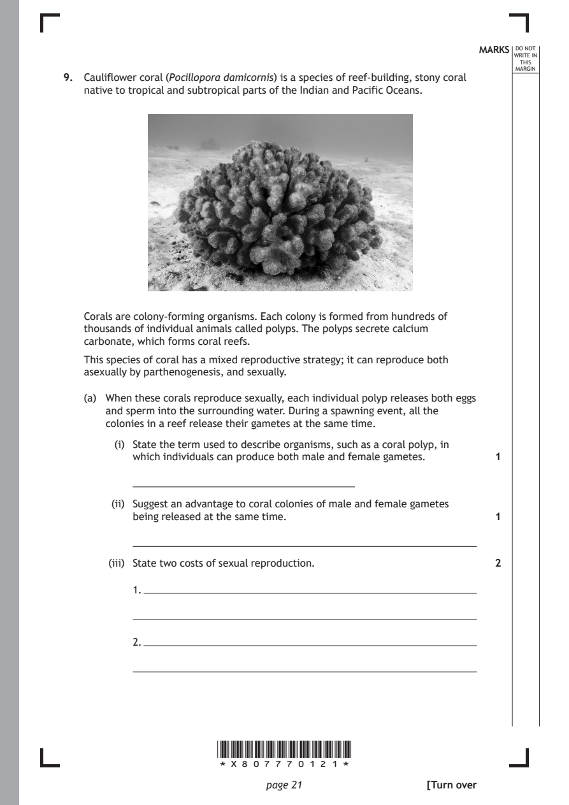
Selectable page text
MARKS _{W}^{D}_{R}^{O}_{I} _{T}^{N}OT
E IN
THIS
MARGIN
9. Cauliflower coral (Pocillopora damicornis) is a species of reef‑building, stony coral
native to tropical and subtropical parts of the Indian and Pacific Oceans.
Corals are colony‑forming organisms. Each colony is formed from hundreds of
thousands of individual animals called polyps. The polyps secrete calcium
carbonate, which forms coral reefs.
This species of coral has a mixed reproductive strategy; it can reproduce both
asexually by parthenogenesis, and sexually.
(a) When these corals reproduce sexually, each individual polyp releases both eggs
and sperm into the surrounding water. During a spawning event, all the
colonies in a reef release their gametes at the same time.
(i) State the term used to describe organisms, such as a coral polyp, in
which individuals can produce both male and female gametes. 1
(ii) Suggest an advantage to coral colonies of male and female gametes
being released at the same time. 1
(iii) State two costs of sexual reproduction. 2
1.
2.
*X807770121*
page 21 [Turn overPDF page 22
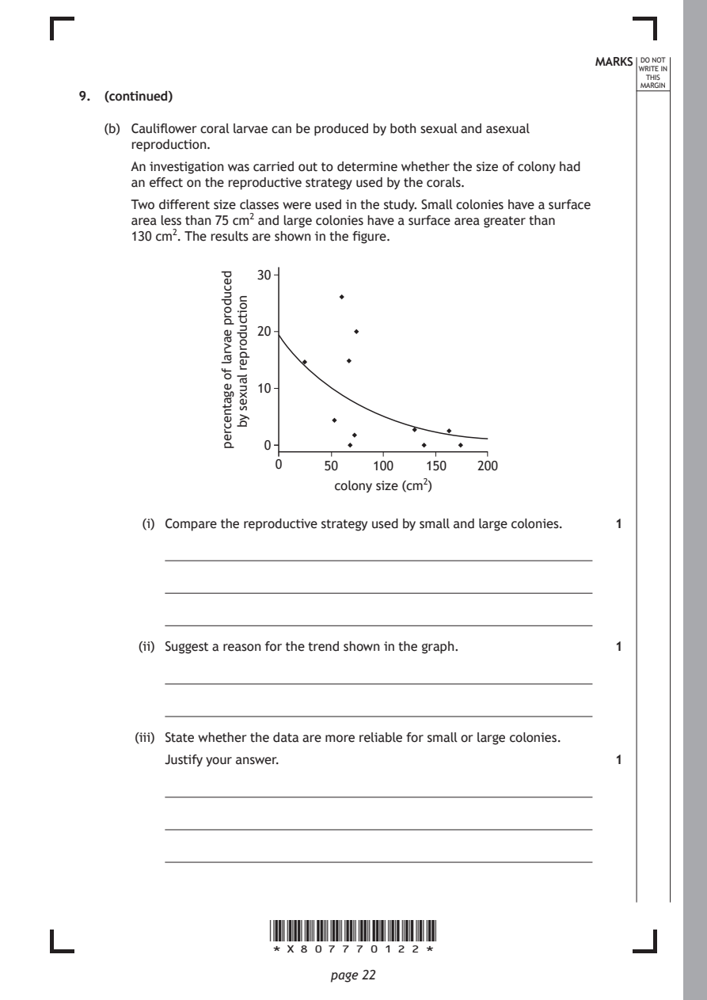
Selectable page text
MARKS _{W}^{D}_{R}^{O}_{I} _{T}^{N}OT
E IN
THIS
MARGIN
9. (continued)
(b) Cauliflower coral larvae can be produced by both sexual and asexual
reproduction.
An investigation was carried out to determine whether the size of colony had
an effect on the reproductive strategy used by the corals.
Two different size classes were used in the study. Small colonies have a surface
area less than 75 cm² and large colonies have a surface area greater than
130 cm². The results are shown in the figure.
*X807770122*
page 22
decudorp
eavral
fo
egatnecrep
noitcudorper
lauxes
yb
30
20
10
0
0 50 100 150 200
colony size (cm²)
(i) Compare the reproductive strategy used by small and large colonies. 1
(ii) Suggest a reason for the trend shown in the graph. 1
(iii) State whether the data are more reliable for small or large colonies.
Justify your answer. 1PDF page 23
Paper 2, Question 10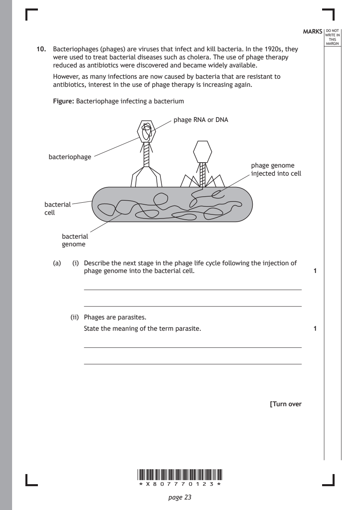
Selectable page text
MARKS _{W}^{D}_{R}^{O}_{I} _{T}^{N}OT
E IN
THIS
MARGIN
10. Bacteriophages (phages) are viruses that infect and kill bacteria. In the 1920s, they
were used to treat bacterial diseases such as cholera. The use of phage therapy
reduced as antibiotics were discovered and became widely available.
However, as many infections are now caused by bacteria that are resistant to
antibiotics, interest in the use of phage therapy is increasing again.
Figure: Bacteriophage infecting a bacterium
phage RNA or DNA
bacteriophage
phage genome
injected into cell
bacterial
cell
bacterial
genome
(a) (i) Describe the next stage in the phage life cycle following the injection of
phage genome into the bacterial cell. 1
(ii) Phages are parasites.
State the meaning of the term parasite. 1
[Turn over
*X807770123*
page 23PDF page 24
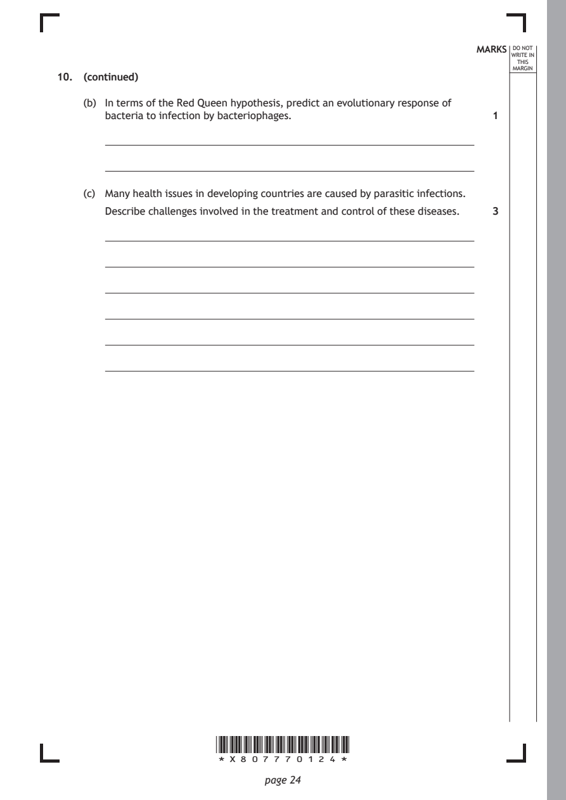
Selectable page text
MARKS _{W}^{D}_{R}^{O}_{I} _{T}^{N}OT
E IN
THIS
MARGIN
10. (continued)
(b) In terms of the Red Queen hypothesis, predict an evolutionary response of
bacteria to infection by bacteriophages. 1
(c) Many health issues in developing countries are caused by parasitic infections.
Describe challenges involved in the treatment and control of these diseases. 3
*X807770124*
page 24PDF page 25
Paper 2, Question 11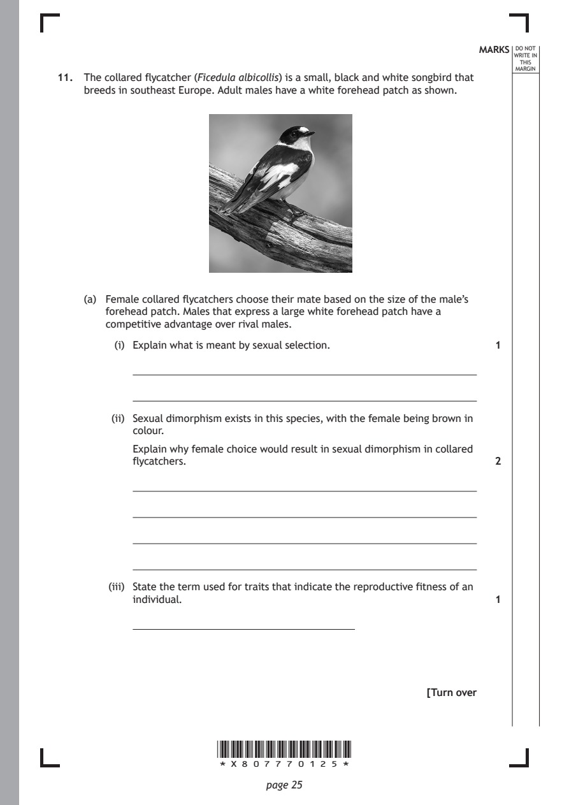
Selectable page text
MARKS _{W}^{D}_{R}^{O}_{I} _{T}^{N}OT
E IN
THIS
MARGIN
11. The collared flycatcher (Ficedula albicollis) is a small, black and white songbird that
breeds in southeast Europe. Adult males have a white forehead patch as shown.
(a) Female collared flycatchers choose their mate based on the size of the male’s
forehead patch. Males that express a large white forehead patch have a
competitive advantage over rival males.
(i) Explain what is meant by sexual selection. 1
(ii) Sexual dimorphism exists in this species, with the female being brown in
colour.
Explain why female choice would result in sexual dimorphism in collared
flycatchers. 2
(iii) State the term used for traits that indicate the reproductive fitness of an
individual. 1
[Turn over
*X807770125*
page 25PDF page 26
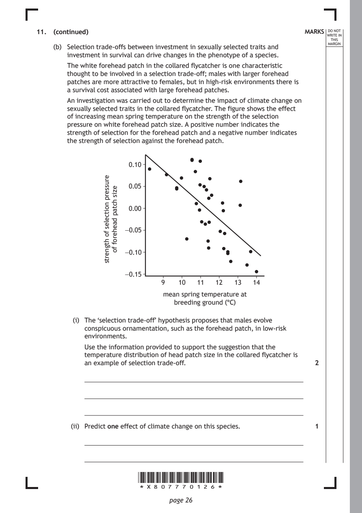
Selectable page text
11. (continued) MARKS _{W}^{D}_{R}^{O}_{I} _{T}^{N}OT
E IN
THIS
(b) Selection trade‑offs between investment in sexually selected traits and MARGIN
investment in survival can drive changes in the phenotype of a species.
The white forehead patch in the collared flycatcher is one characteristic
thought to be involved in a selection trade‑off; males with larger forehead
patches are more attractive to females, but in high‑risk environments there is
a survival cost associated with large forehead patches.
An investigation was carried out to determine the impact of climate change on
sexually selected traits in the collared flycatcher. The figure shows the effect
of increasing mean spring temperature on the strength of the selection
pressure on white forehead patch size. A positive number indicates the
strength of selection for the forehead patch and a negative number indicates
the strength of selection against the forehead patch.
0.10
0.05
0.00
−0.05
−0.10
−0.15
9 10 11 12 13 14
mean spring temperature at
breeding ground (°C)
*X807770126*
page 26
erusserp
noitceles
fo
htgnerts
ezis
hctap
daeherof
fo
(i) The ‘selection trade‑off’ hypothesis proposes that males evolve
conspicuous ornamentation, such as the forehead patch, in low‑risk
environments.
Use the information provided to support the suggestion that the
temperature distribution of head patch size in the collared flycatcher is
an example of selection trade‑off. 2
(ii) Predict one effect of climate change on this species. 1PDF page 27
Paper 2, Question 12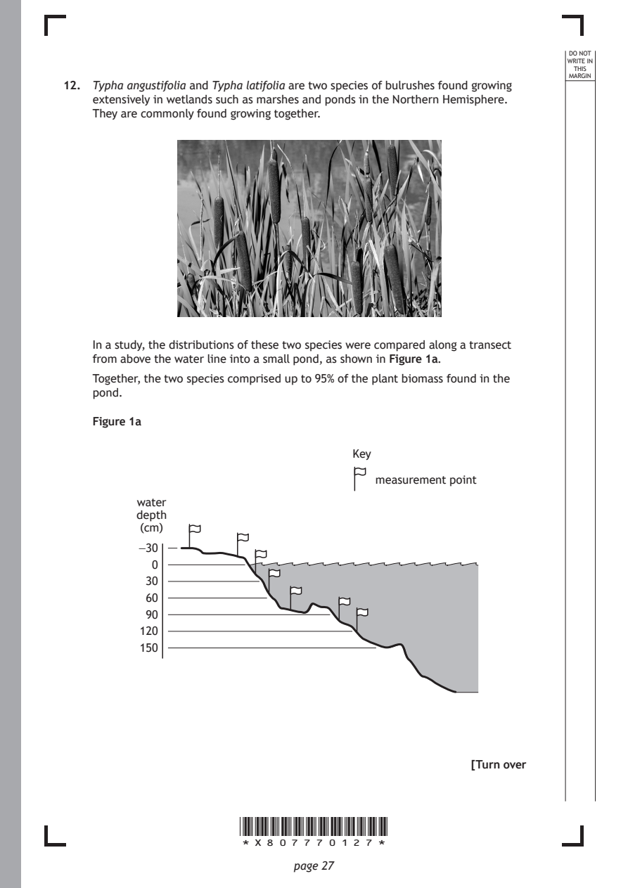
Selectable page text
DO NOT
WRITE IN
THIS
MARGIN
12. Typha angustifolia and Typha latifolia are two species of bulrushes found growing
extensively in wetlands such as marshes and ponds in the Northern Hemisphere.
They are commonly found growing together.
In a study, the distributions of these two species were compared along a transect
from above the water line into a small pond, as shown in Figure 1a.
Together, the two species comprised up to 95% of the plant biomass found in the
pond.
Figure 1a
Key
measurement point
water
depth
(cm)
−30
0
30
60
90
120
150
[Turn over
*X807770127*
page 27PDF page 28
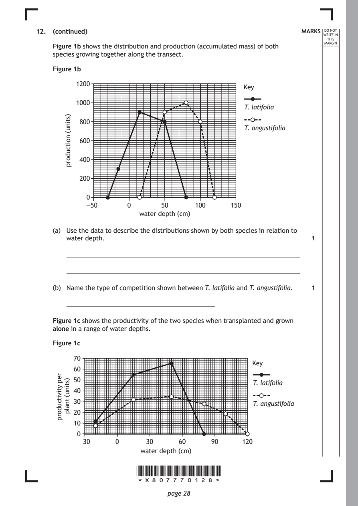
Selectable page text
12. (continued) MARKS _{W}^{D}_{R}^{O}_{I} _{T}^{N}OT
E IN
THIS
Figure 1b shows the distribution and production (accumulated mass) of both MARGIN
species growing together along the transect.
Figure 1b
−50 0
water depth (cm)
*X807770128*
page 28
)stinu(
noitcudorp
1200
Key
1000
T. latifolia
800
T. angustifolia
600
400
200
0
50 100 150
(a) Use the data to describe the distributions shown by both species in relation to
water depth.
(b) Name the type of competition shown between T. latifolia and T. angustifolia.
Figure 1c shows the productivity of the two species when transplanted and grown
alone in a range of water depths.
Figure 1c
−30 0
water depth (cm)
rep
ytivitcudorp
)stinu(
tnalp
1
1
70
Key
60
50
T. latifolia
40
30
T. angustifolia
20
10
0
30 60 90 120PDF page 29
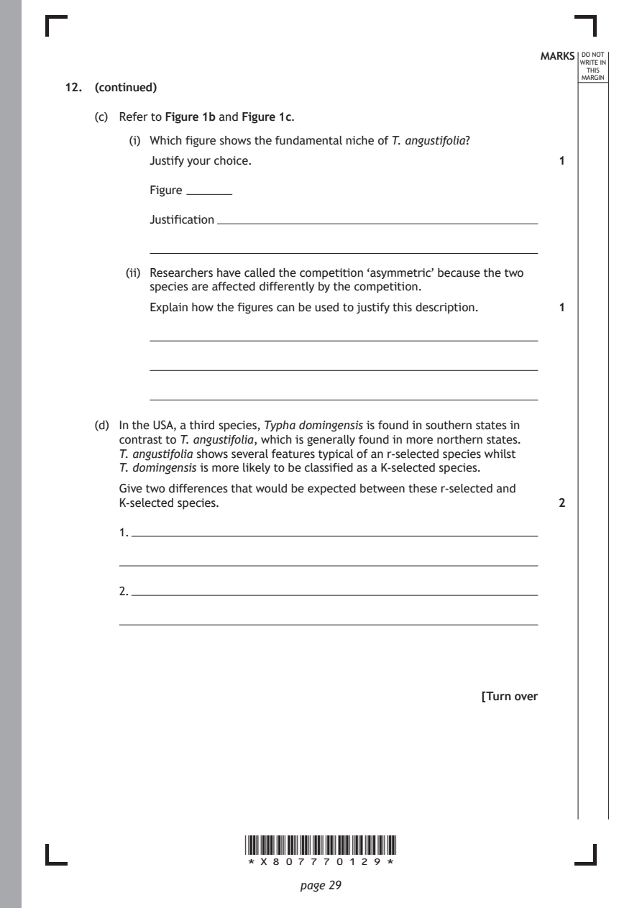
Selectable page text
MARKS _{W}^{D}_{R}^{O}_{I} _{T}^{N}OT
E IN
THIS
MARGIN
12. (continued)
(c) Refer to Figure 1b and Figure 1c.
(i) Which figure shows the fundamental niche of T. angustifolia?
Justify your choice. 1
Figure
Justification
(ii) Researchers have called the competition ‘asymmetric’ because the two
species are affected differently by the competition.
Explain how the figures can be used to justify this description. 1
(d) In the USA, a third species, Typha domingensis is found in southern states in
contrast to T. angustifolia, which is generally found in more northern states.
T. angustifolia shows several features typical of an r‑selected species whilst
T. domingensis is more likely to be classified as a K‑selected species.
Give two differences that would be expected between these r‑selected and
K‑selected species. 2
1.
2.
[Turn over
*X807770129*
page 29PDF page 30
Paper 2, Question 13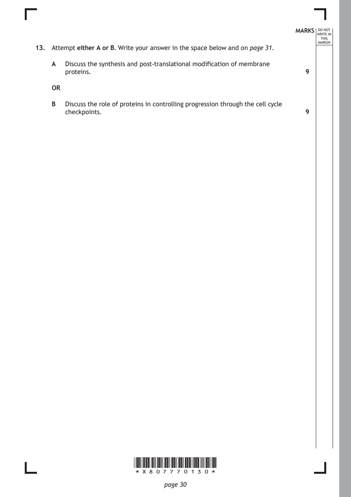
Selectable page text
MARKS _{W}^{D}_{R}^{O}_{I} _{T}^{N}OT
E IN
THIS
MARGIN
13. Attempt either A or B. Write your answer in the space below and on page 31.
A Discuss the synthesis and post‑translational modification of membrane
proteins. 9
OR
B Discuss the role of proteins in controlling progression through the cell cycle
checkpoints. 9
*X807770130*
page 30PDF page 31
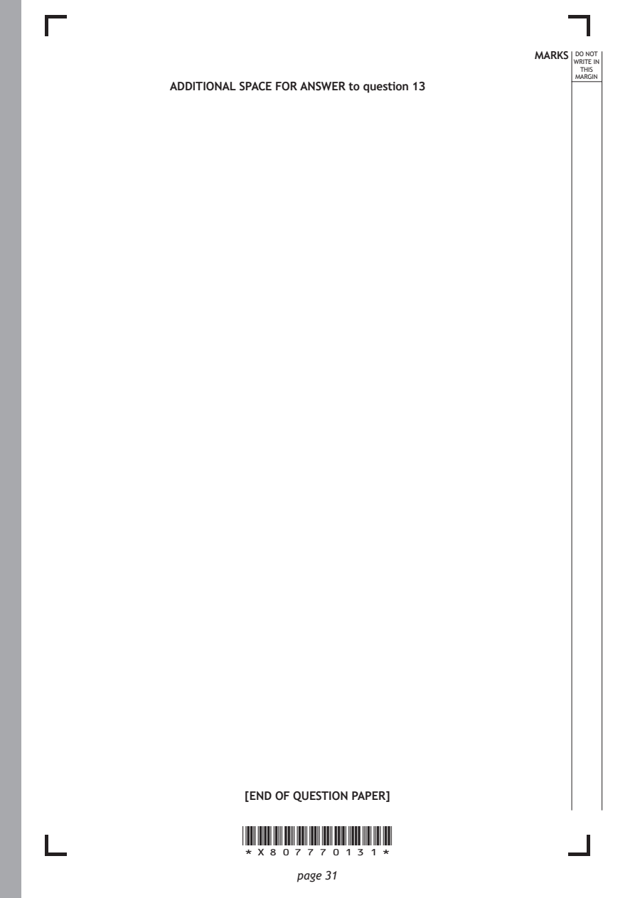
Selectable page text
MARKS _{W}^{D}_{R}^{O}_{I} _{T}^{N}OT
E IN
THIS
MARGIN
ADDITIONAL SPACE FOR ANSWER to question 13
[END OF QUESTION PAPER]
*X807770131*
page 31PDF page 32
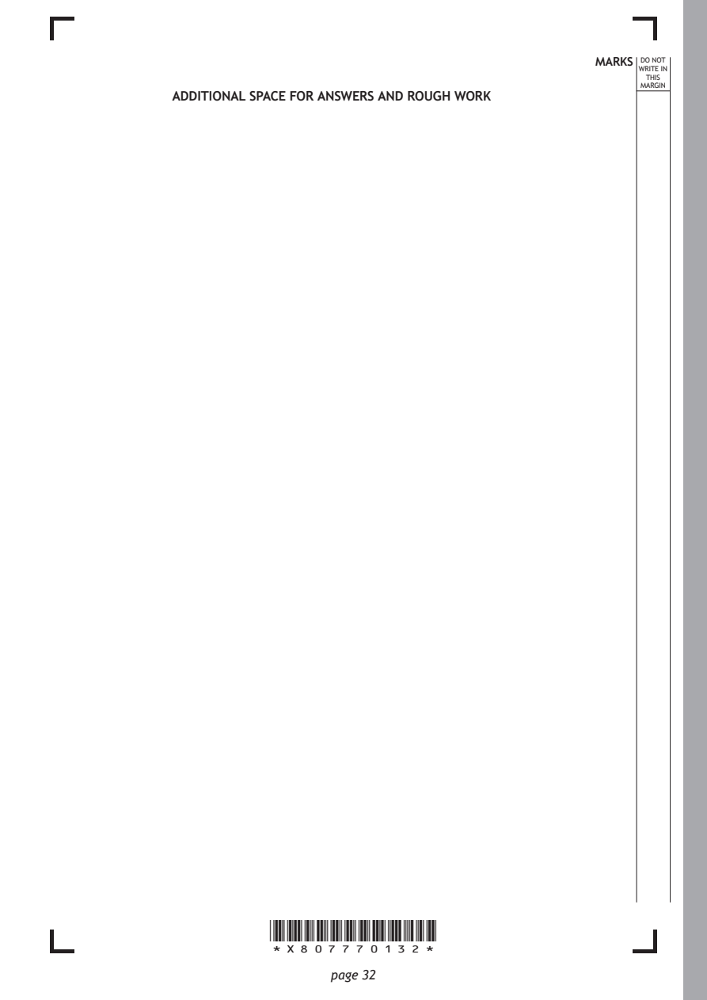
Selectable page text
MARKS _{W}^{D}_{R}^{O}_{I} _{T}^{N}OT
E IN
THIS
MARGIN
ADDITIONAL SPACE FOR ANSWERS AND ROUGH WORK
*X807770132*
page 32PDF page 33
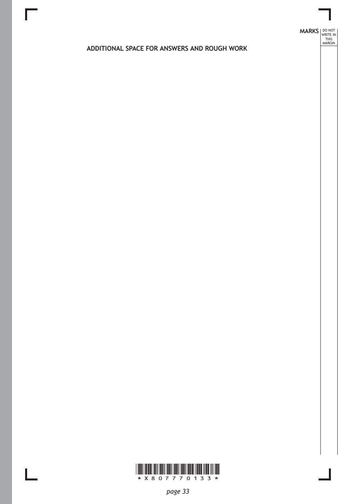
Selectable page text
MARKS _{W}^{D}_{R}^{O}_{I} _{T}^{N}OT
E IN
THIS
MARGIN
ADDITIONAL SPACE FOR ANSWERS AND ROUGH WORK
*X807770133*
page 33PDF page 34
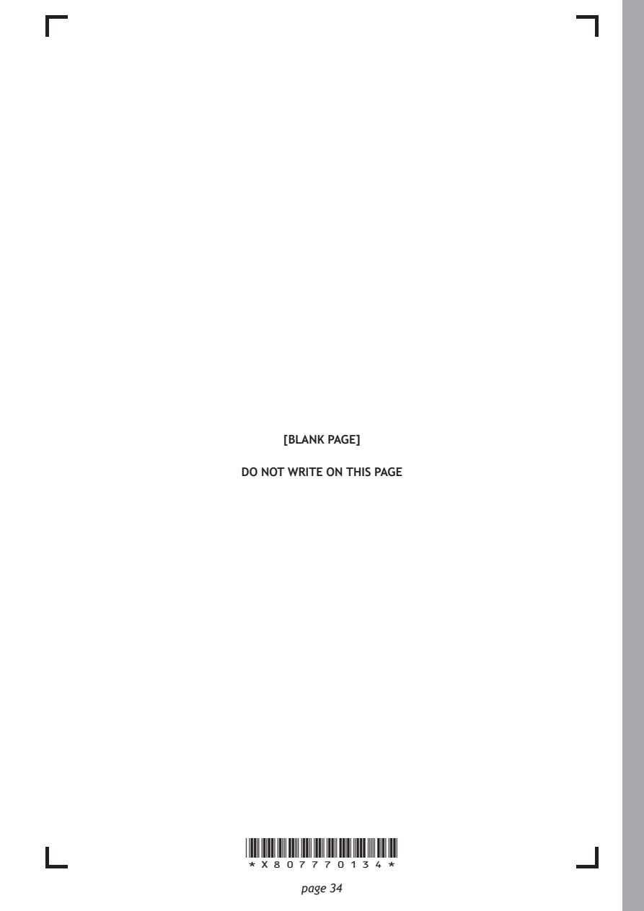
Selectable page text
[BLANK PAGE]
DO NOT WRITE ON THIS PAGE
*X807770134*
page 34PDF page 35
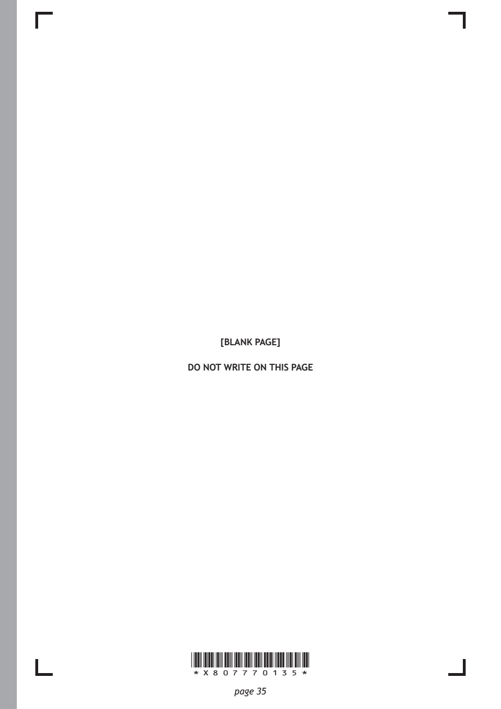
Selectable page text
[BLANK PAGE]
DO NOT WRITE ON THIS PAGE
*X807770135*
page 35PDF page 36
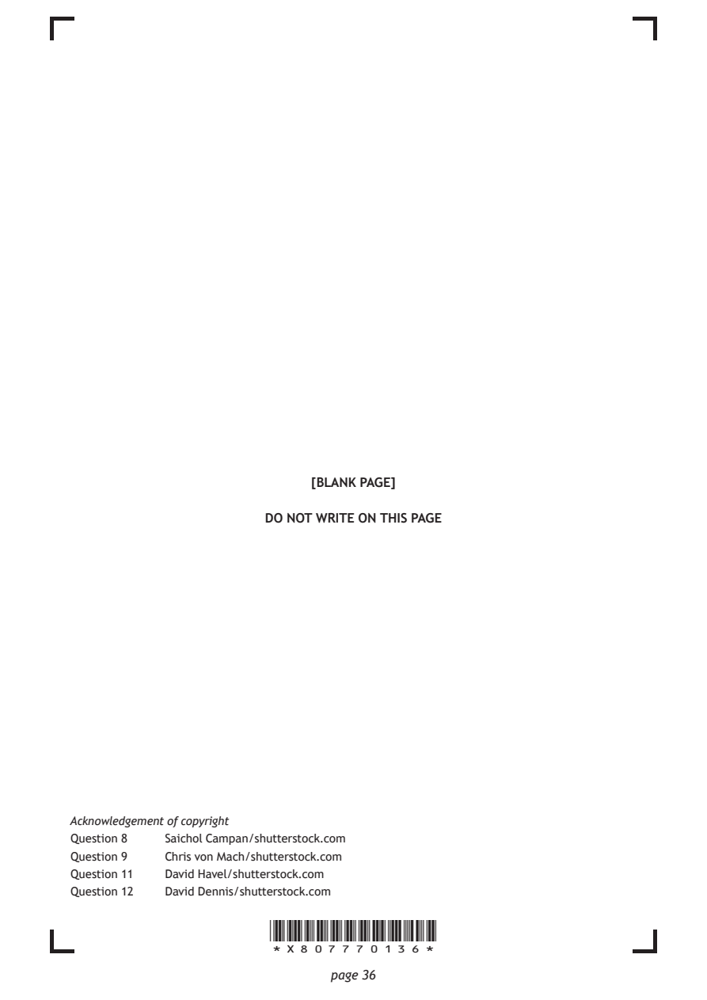
Selectable page text
[BLANK PAGE]
DO NOT WRITE ON THIS PAGE
Acknowledgement of copyright
Question 8 Saichol Campan/shutterstock.com
Question 9 Chris von Mach/shutterstock.com
Question 11 David Havel/shutterstock.com
Question 12 David Dennis/shutterstock.com
*X807770136*
page 36